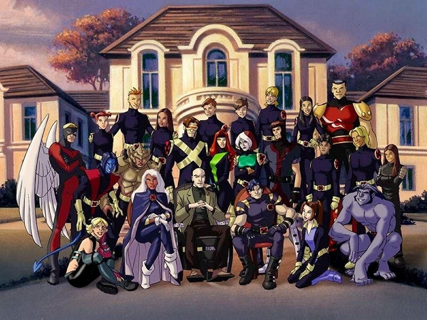
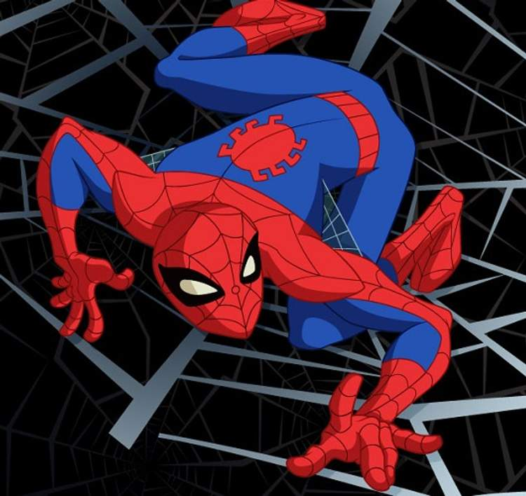
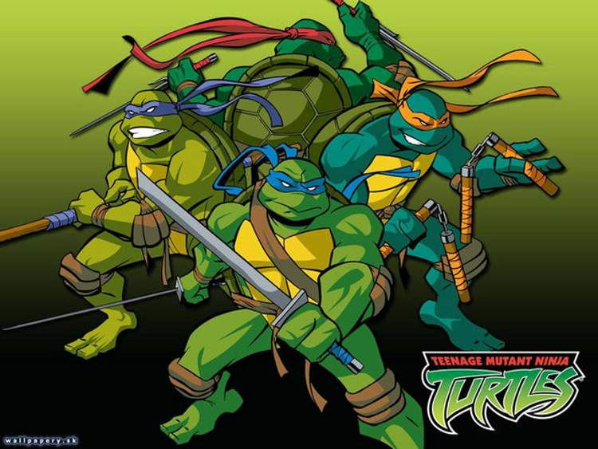
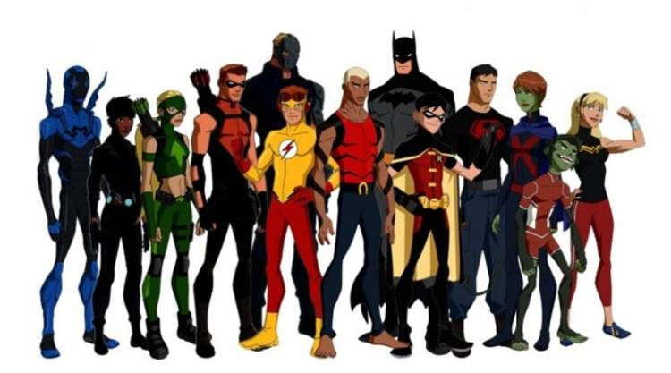
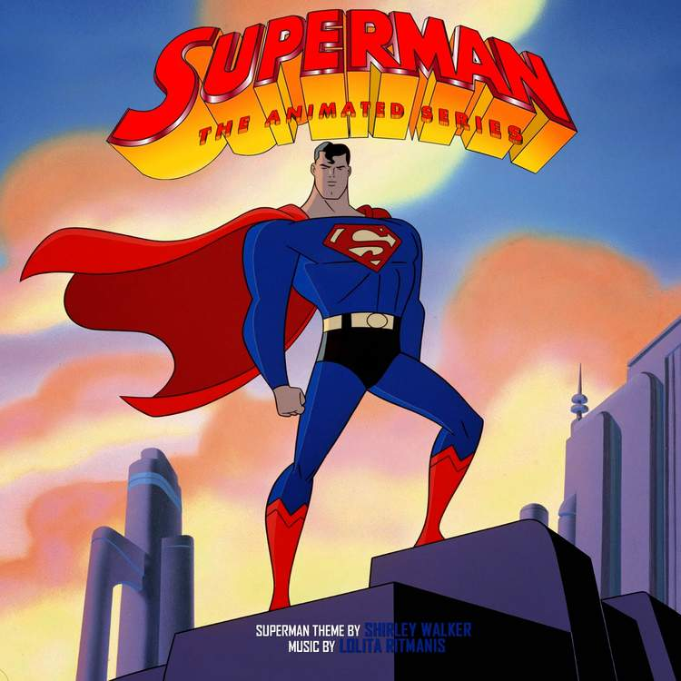
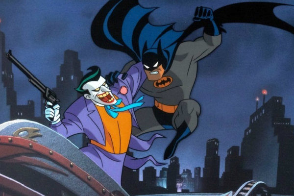
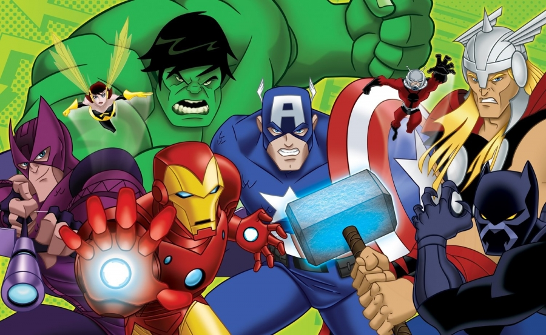

X-Men: Evolution
X-Men: Evolution trazia os estudantes do Instituto Xavier enfrentando problemas de adolescentes.
Porém, os mutantes são obrigados a crescer conforme veem as consequências de seus atos. Pouco a pouco, a equipe se torna dos super-heróis que conhecemos.

O Espetacular Homem-Aranha
O Espetacular Homem-Aranha foi uma série animada que apresentou os personagens de maneira mais jovial do que o de costume, se aproximando bastante da versão Ultimate.
No desenho, Peter possui 16 anos e faz cerca de quatro meses que ganhou seus poderes. As histórias exploram muito bem todos os conceitos pertinentes ao desenvolvimento dos personagens, além de utilizar alguns dos vilões mais icônicos de forma consistente e envolvente.

As Tartarugas Mutantes Ninja
As Tartarugas Mutantes Ninja se baseou em uma HQ com um conteúdo pesado e sombrio, porém conseguiu transformaram tudo isso em uma série animada, colorida, leve e gigantesca - sem perder a essência.
Não importava quem era o Michelangelo, Donatello, Raphael ou o Leonardo, se você era uma criança nessa época, com certeza já soltou um “Santa Tartaruga!”
A série também abriu portas para as Tartarugas chegarem em inúmeras outras mídias.

Justiça Jovem
Justiça Jovem só permaneceu no ar por duas temporadas, sendo cancelada em 2013.
A animação captava diversas faces das histórias dos heróis mirins, contando com humor, romance, diversão, intrigas e um enredo inteligente.
A terceira temporada da animação, contudo, finalmente foi confirmada e ela deve voltar em 2018, no serviço de streaming da Warner.

Superman: A Série Animada
Superman: A Série Animada foi um dos maiores desenhos animados produzidos pela DC Comics e baseado num dos maiores personagens da editora.
Exibida entre 1996 e 2000, ela é lembrada como uma das mais importantes séries animadas de todos os tempos!
A animação é responsável pela introdução do Flash, Lanterna Verde, Aquaman, Darkseid e outros personagens da mitologia do Superman, até a formação definitiva do DCAU.

Batman: A Série Animada
Aqui, você tem o que houve de mais revolucionário em séries animadas de super heróis, praticamente todos os itens dessa lista só foram possíveis graças a esta série.
Batman: Série Animada transformou a maneira de se fazer animações. Ela continha histórias interessantes e maduras, mesmo com as tramas sendo suavizadas para agradar o publico infantil.
Bruce Timm e Paul Dini trouxeram alguns dos vilões mais icônicos, representando os pontos mais conceituais do Cavaleiro das Trevas e toda sua enorme mitologia.

Vingadores: Heróis Mais Poderosos da Terra
Vingadores: Heróis Mais Poderosos da Terra é a melhor animação já feita da equipe principal do Universo Marvel, sendo a única que faz jus aos Vingadores.
Tem desde a relação complexa entre os Vingadores, heróis menos conhecidos aparecendo, até referências às sagas de quadrinhos, além de uma música-tema 10/10!
É uma pena não tem ganhado uma terceira temporada.
 Liga da Justiça: Sem Limites
Liga da Justiça: Sem Limites
Liga da Justiça apresentou os sete membros da equipe em sua melhor forma, fazendo com que a partir da terceira temporada, a animação começasse a explorar mais o Universo DC, contando com cada vez mais membros na equipe.
A ideia básica de Liga da Jutiça: Sem Limites era abranger o Universo DC de uma maneira nunca vista fora dos quadrinhos. Muitos escritores de HQ’s trabalharam com os roteiros da série animada, um trabalho verdadeiramente gratificante para os fãs.